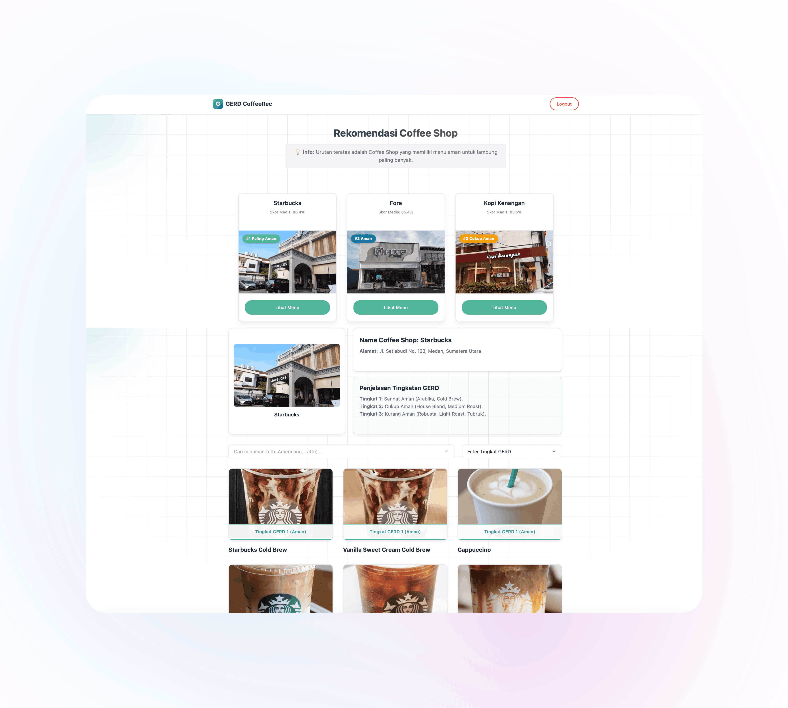

Sistem rekomendasi cerdas yang membantu penderita GERD memilih menu kopi terbaik di coffee shop Medan berdasarkan perhitungan akurat pada komposisi biji, teknik roasting, dan metode seduh.

Pemilihan menu kopi yang aman sangat bergantung pada tingkat keparahan asam lambung Anda. Sistem kami membagi toleransi pengguna ke dalam 3 tingkatan medis berikut:
Gejala refluks asam disadari (seperti sensasi heartburn), namun sangat mudah ditoleransi dan sama sekali tidak mengganggu aktivitas normal sehari-hari.
Frekuensi dan intensitas naiknya asam lambung cukup kuat sehingga mulai memengaruhi dan mengganggu aktivitas fisik serta rutinitas kehidupan harian secara signifikan.
Gejala sangat persisten hingga mengganggu kesejahteraan hidup, memicu gangguan tidur parah, dan berisiko komplikasi struktural pada mukosa kerongkongan jika dibiarkan.
Bergabunglah dan temukan rekomendasi coffee shop beserta menu kopi teraman di kota Medan sekarang juga.